소음진동산업기사 (2014-05-25 기출문제)
1과목: 소음진동개론
1. 다음은 진동파에 관한 설명이다. ()안에 알맞은 것은?
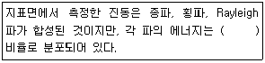
- 종파 67%, 횡파 26%, Rayleigh 7%
- Rayleigh 67%, 횡파 26%, 종파 7%
- 횡파 67%, 종파 26%, Rayleigh 7%
- 종파 67%, Rayleigh 26%, 횡파 7%
(정답률: 알수없음)

2. 외이와 내이에서의 음의 전달매질의 연결로 옳은 것은?
- 외이:고체(뼈), 내이:기체(공기)
- 외이:고체(뼈), 내이:액체(림프액)
- 외이:기체(공기), 내이:액체(림프액)
- 외이:기체(공기), 내이:고체(뼈)
(정답률: 알수없음)
3. 무지향성 음원기준으로 선음원이 자유공간에 있을 때, 음압레벨(SPL)과 음향파워레벨(PWL)과의 관계는? (단, r은 음원으로부터의 거리)
- SPL=PWL-10×log(2πr)
- SPL=PWL-10×log(4πr2)
- SPL=PWL+10×log(4πr)
- SPL=PWL+10×log(2πr)
(정답률: 알수없음)
4. 평균음압이 3,450Pa이고 특정지향음압이 5,450Pa일 때 지향계수는?
- 5.5
- 4.0
- 3.5
- 2.5
(정답률: 알수없음)
5. 다음은 잔향시간에 관한 설명이다. ()안에 가장 적합한 것은?
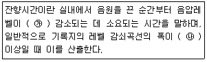
- ㉮ 60dB, ㉯ 10dB(최소 5dB)
- ㉮ 60dB, ㉯ 25dB(최소 15dB)
- ㉮ 120dB, ㉯ 10dB(최소 5dB)
- ㉮ 120dB, ㉯ 25dB(최소 15dB)
(정답률: 알수없음)
6. 중심주파수 16,000Hz인 1/1 옥타브밴드 분석기의 하한주파수로 옳은 것은?
- 약 10,500Hz
- 약 11,300Hz
- 약 13,300Hz
- 약 14,300Hz
(정답률: 알수없음)
7. 선음원으로부터 3m 거리에서 96dB이 측정되었다면 41m에서의 음압레벨은?
- 92dB
- 88dB
- 85dB
- 81dB
(정답률: 알수없음)
8. A음원의 음세기(I)가 1×10-10W/m2이다. 이 때 음세기 레벨(SIL)은?
- 5dB
- 10dB
- 15dB
- 20dB
(정답률: 알수없음)
9. 소음과 작업능률의 일반적인 상관관계에 관한 설명으로 가장 거리가 먼 것은?
- 특정 음이 없고, 90dB(A)를 넘지 않는 일정소음도에서는 작업을 방해하지 않는 것으로 본다.
- 불규칙한 폭발음은 90dB(A) 이하이면 작업방해를 받지 않는다.
- 1,000~2,000Hz 이상의 고음역 소음은 저음역 소음보다 작업방해를 크게 유발한다.
- 소음은 총 작업량의 저하보다는 정밀도를 저하시키기 쉽다.
(정답률: 알수없음)
10. 기온이 20℃, 음압실효치가 0.35N/m2일 때, 평균음에너지 밀도는?
- 2.6×10-7J/m3
- 5.6×10-7J/m3
- 8.6×10-7J/m3
- 1.2×10-6J/m3
(정답률: 알수없음)
11. 소음 평가에 관한 설명으로 옳지 않은 것은?
- NR곡선은 NC곡선을 기본으로 하고, 음의 스펙트라, 반복성, 계절, 시간대 등을 고려한 것으로 기본적으로 NC와 동일하다.
- NR곡선은 소음을 1/3 옥타브밴트로 분석한 음압레벨을 NR-chart에 plotting 하여 그 중 가장 낮은 NR곡선에 접하는 것을 판독한 값이 NR값이다.
- PNC는 NC곡선 중의 저주파부를 더 낮은 값으로 수정한 것이다.
- NC는 공조기소음 등과 같은 실내소음을 평가하기 위한 척도로서 소음을 1/1옥타브밴트로 분석한 결과에 의해 실내소음을 평가하는 방법이다.
(정답률: 알수없음)
12. 음의 회절에 관한 내용으로 가장 적합한 것은?
- 장애물 뒤쪽으로 음이 전파하는 현상이다.
- 한 매질에서 타 매질로 통과할 구부러지는 현상을 의미하며, 음속비가 크면 회절도 크다.
- 파장이 작으면 회절이 잘 된다.
- 물체의 틈구멍에 있어서는 그 틈구멍이 클수록 회절이 잘 된다.
(정답률: 알수없음)
13. 마루 위의 점은원이 반자유공간으로 음을 전파하고 있다. 음원에서 3.4m인 지점의 음압레벨이 92dB라면 이 음원의 파워레벨은?
- 102.3dB
- 1⑤.3dB
- 110.6dB
- 113.6dB
(정답률: 알수없음)
14. 음장의 종류 중 원음장과 가장 거리가 먼 것은?
- 정현음장
- 잔향음장
- 자유음장
- 확산음장
(정답률: 알수없음)
15. 소음평가지수 NRN(Noise Rating Number)에 관한 설명으로 가장 거리가 먼 것은?
- 소음피해에 대한 주민들의 반응은 NRN으로 40이하이면 보통 주민반응이 없는 것으로 판단할 수 있다.
- 순음 성분이 많은 경우에는 NR보정 값은 +5dB이다.
- 반복성 연속음의 경우에는 NR보정 값은 +3dB이다.
- 습관이 안 된 소음에 대해서는 NR보정 값은 0이다.
(정답률: 알수없음)
16. 건강한 사람에게 다음과 같은 순음의 음압레벨을 폭로시켰을 때 가장 예민하게 느끼는 것은?
- 200 Hz, 70 dB
- 1,000 Hz, 70 dB
- 4,000 Hz, 70 dB
- 8,000 Hz, 70 dB
(정답률: 알수없음)
17. 진동이 인체에 미치는 영향 중 허리, 가슴 및 등 쪽에서 가장 심한 통증을 느끼는 주파수는?
- 1~2 Hz
- 6 Hz
- 14~16 Hz
- 20 Hz
(정답률: 알수없음)
18. 소리의 굴절에관한 설명으로 옳지않은 것은? (단, θ1: 첫 번째 매질에 대한 소리의 입사각, θ2: 두 번째 매질 내에서의 굴절각, R: 굴절도, c1, c2: 각각 첫 번째, 두 번째 매질에서의 음속)
- snell의 법칙에 의해
 로 표현한다.
로 표현한다.  이다.
이다.- 음원보다 상공의 풍속이 클 때 풍하 측에서는 지면 쪽으로 굴절한다.
- 소리가 전파할 때 매질의 밀도변화로 인하여 음파의 진행방향이 변하는 것을 말한다.
(정답률: 알수없음)
19. 음향출력과 음향파워레벨과의 관계로 옳은 것은?
- 1012W=0dB
- 102W=0dB
- 10-12W=0dB
- 10-2W=0dB
(정답률: 알수없음)
20. 음압진폭이 10N/m2인 순음성분의 소음이 있다. 이 소음의 음압레벨은?
- 1⑤ dB
- 111 dB
- 115 dB
- 121 dB
(정답률: 알수없음)
2과목: 소음진동 공정시험 기준
21. 환경기준 중 소음을 측정할 때, “도로변지역”의 범위기준으로 가장 적합한 것은?
- 도로단으로부터 차선수×10m
- 도로단으로부터 차선수×50m
- 도로단으로부터 차선수×100m
- 도로단으로부터 차선수×150m
(정답률: 알수없음)
22. 다음은 규제기준 중 생활진동 측정방법에서 진동레벨기록기를 사용하여 측정할 경우 측정자료 분석방법에 관한 사항이다. ()안에 알맞은 것은?
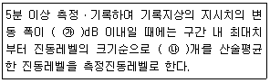
- ㉮ 5, ㉯ 5
- ㉮ 5, ㉯ 10
- ㉮ 10, ㉯ 10
- ㉮ 10, ㉯ 20
(정답률: 알수없음)
23. 환경기준 중 소음측정방법으로 옳지 안은 것은?
- 소음계와 소음도 기록기를 연결하여 측정ㆍ기록하는 것을 원칙으로 한다.
- 소음계의 레벨레인지 변환기는 측정지점의 소음도를 예비조사한 후 적절하게 고정시켜야 한다.
- 소음계의 청감보정회로는 A특성에 고정하여 측정하여야 한다.
- 소음계의 동특성은 원칙적으로 느림(Slow)모드로 하여 측정하여야 한다.
(정답률: 알수없음)
24. 배출허용기준 중 진동측정방법에 관한사항으로 가장 거리가 먼 것은?
- 진동레벨계의 감각보정회로는 별도 규정이 없는 한 V특성(수직)에 고정하여 측정하여야 한다.
- 진동픽업의 연결선은 잡음 등을 방지하기 위하여 지표면에 일직선으로 설치한다.
- 진동픽업(pick-up)의 설치장소는 옥내지표를 원칙으로 하고 복잡한 반사, 회절현상이 예상되는 지점은 피한다.
- 진동픽업의 설치장소는 완충물이 없고, 충분히 다져서 단단히 굳은 장소로 한다.
(정답률: 알수없음)
25. 다음은 소음계의 사용기준이다. () 안에 알맞은 것은?
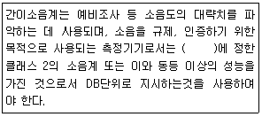
- KS C IEC 61672-1
- KS F IEC 61672-1
- KS Q IEC 61672-1
- KS E IEC 61672-1
(정답률: 알수없음)
26. 다음은 레벨레인지 변환기에 관한 설명이다. () 안에 가장 적합한 것은?
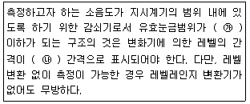
- ㉮ 10dB, ㉯ 5 dB
- ㉮ 10dB, ㉯ 10 dB
- ㉮ 30dB, ㉯ 5 dB
- ㉮ 30dB, ㉯ 10 dB
(정답률: 알수없음)
27. 소음계의 구조별 성능기준으로 옳지 않은 것은?
- 증폭기(Amplifler)는 마이크로폰에 의하여 음향에너지를 전기에너지로 변환시킨 양을 증폭시키는 장치를 말한다.
- 청감보정회로(Weighting Networks)에서 자동차 소음측정용은 C특성도 함께 갖추어야 한다.
- 마이크로폰(Microphone)은 지향성이 큰 압력형으로 하며, 기기의 본체와 분리되지 않아야 한다.
- 출력단자(Monitor Our)는 소음신호를 기록기 등에 전송할 수 있는 교류단자를 갖춘 것이어야 한다.
(정답률: 알수없음)
28. 다음은 진동측정에 사용되는 진동레벨계의 성능기준이다. ()안에 가장 적합한 것은?
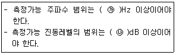
- ㉮ 1~50, ㉯ 15~55
- ㉮ 1~50, ㉯ 45~120
- ㉮ 1~90, ㉯ 15~55
- ㉮ 1~90, ㉯ 45~120
(정답률: 알수없음)
29. 다음 중 항공기소음 측정방법에서 1일 단위의 WECPNL을 구하는 식으로 옳은 것은? (단,
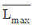
당일의 평균 최고소음도, 일간 항공기의 등가통과횟수)- WECPNL=
 +10 log N-27
+10 log N-27 - WECPNL=
 -10 log N-27
-10 log N-27 - WECPNL=
 +10 log N+27
+10 log N+27 - WECPNL=
 -10 log N+27
-10 log N+27
(정답률: 알수없음)
30. 항공기 소음한도 측정 시 헬리포트 주변등과 같이 배경소음보다 10dB 이상 큰 항공기 소음의 지속시간 평균치
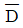
가 30초 이상일 경우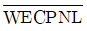
에 보정해야 하는 보정치로 옳은 것은?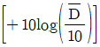
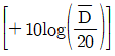
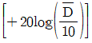
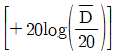
(정답률: 알수없음)
31. 소음계를 기본구조와 부속장치로 구분할 때 다음 중 부속장치에 해당하지 않는 것은?
- Wind Screen
- Tripod
- Amplifier
- Pistonphone, Calibrator
(정답률: 알수없음)
32. 다음은 등가소음도 계산방법이다. ()안에 가장 적합한 것은?
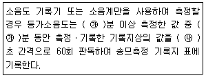
- ㉮ 1, ㉯ 5
- ㉮ 1, ㉯ 10
- ㉮ 5, ㉯ 5
- ㉮ 5, ㉯ 10
(정답률: 알수없음)
33. 소음의 배출허용기준 측정방법 중 측정점 선정조건으로 거리가 먼 것은?
- 아파트형 공장의 경우에는 공장건물의 부지경계선 중 피해가 우려되는 장소로서 소음도가 높을 것으로 예상되는 지점의 지면 위 1.2~1.5m 높이로 한다.
- 공장의 부지경계선이 불명확할 경우에는 피해가 예상되는 자의 부지경계선으로 한다.
- 공장의 부지경계선에 비하여 피해가 예상되는 자의 부지경계선에서의 소음도가 더 큰 경우에는 피해가 예상되는 자의 부지경계선으로 한다.
- 장애물이 방음벽일 경우에는 장애물 밖의 5~10m 떨어진 지점 중 암영대(暗影帶 )의 영향이 적은 지점으로 한다.
(정답률: 알수없음)
34. 규제기준 중 생활진동 측정방법 중 디지털 진동자동분석계를 사용할 경우 측정진동레벨로 정하는 기준으로 옳은 것은?
- 샘플주기를 0.1초 이내에서 결정하고 1분 이상 측정하여 자동 연산ㆍ기록한 80% 범위의 상단치인 L10값
- 샘플주기를 0.1초 이내에서 결정하고 5분 이상 측정하여 자동 연산ㆍ기록한 80% 범위의 상단치인 L10값
- 샘플주기를 1초 이내에서 결정하고 1분 이상 측정하여 자동 연산ㆍ기록한 80% 범위의 상단치인 L10값
- 샘플주기를 1초 이내에서 결정하고 5분 이상 측정하여 자동 연산ㆍ기록한 80% 범위의 상단치인 L10값
(정답률: 알수없음)
35. 소음계의 성능기준 중 레벨레인지 변환기의 전환오차는 얼마 이내이어야 하는가?
- 0.1 dB
- 0.5 dB
- 1.0 dB
- 5 dB
(정답률: 알수없음)
36. 환경기준 중 소음측정 일반사항으로 가장 적합한 것은?
- 소음계의 마이크로폰은 측정위치에 받침장치(삼각대등)를 설치하지 않고 측정하는 것을 원칙으로 한다.
- 손으로 소음계를 잡고 측정할 경우 소음계는 측정자의 몸으로부터 0.1m 이상 떨어져야 한다.
- 소음계의 마이크로폰은 주소음원 반대방향으로 향하도록 하여야 한다.
- 풍속이 2m/s 이상일 때에는 반드시 마이크로폰에 방풍망을 부착하여야 한다.
(정답률: 알수없음)
37. 진동픽업의 종류 중 저렴한 장점은 있으나 전동기, 변압기, 변전설비 부근 등 자장이 강하게 형성된 장소에서 측정 시 자장의 영향으로 진동측정이 부적합 한 것은?
- 동전형
- 압전형
- 압축형
- 접촉형
(정답률: 알수없음)
38. 배출허용기준 중 소음측정방법에 관한사항으로 옳지 않은 것은?
- 풍속이 5m/s를 초과할 때에는 측정하여서는 안 된다.
- 측정소음도의 측정은 대상 배출시설의 소음발생기기를 가능한 한 최대출력으로 가동시킨 정상상태에서 측정하여야 한다.
- 피해가 예상되는 적절한 측정시각에 2지점 이상의 측정지점수를 선정ㆍ측정하여 그중 가장 높은 소음도를 측정소음도로 한다.
- 손으로 소음계를 잡고 측정할 경우 소음계는 측정자의 몸으로부터 0.3m 이상 떨어져야 한다.
(정답률: 알수없음)
39. 소음진동공정 시험기준상 용어의 정의로 옳지 않은 것은?
- 평가소음도 : 대상소음도에 보정치를 보정한 후 얻어진 소음도를 말한다.
- 지발(遲發)발파 : 수초 내에 시간차를 두고 발파하는 것을 말한다.단, 발파기를 1회 사용하는 것에 한한다.
- 등가소음도 : 임의의 측정시간 동안 발생한 변동소음의 총 에너지를 같은 시간 내에 정상소음의 에너지로 등가하여 얻어진 소음도를 말한다.
- 소음도 : 계기나 기록지 상에서 판독한 실효치를 말한다.
(정답률: 알수없음)
40. 발파진동 측정자료 평가표 서식에 기재되어야 하는 사항으로 거리가 먼 것은?
- 폭약의 종류
- 폭약 제조사
- 발파횟수(낮, 밤)
- 측정지점 약도
(정답률: 알수없음)
3과목: 소음진동방지기술
41. 방진재 중 공기스프링의 단점으로 거리가 먼 것은?
- 구조가 복잡하고 시설비가 많은 편이다.
- 부하능력범위가 비교적 좁은 편이다.
- 공기누출의 위험이 있다.
- 압축기 등 부대시설이 필요하다.
(정답률: 알수없음)
42. 감속스프링의 장점으로 거리가 먼 것은?
- 뒤틀리거나 오므라들지 않는다.
- 최대 변위가 허용된다.
- 공진 시에 전달율이 매우 작다.
- 저주파 차진에 좋다.
(정답률: 알수없음)
43. 반무한 방음벽의 직접음 회절감쇠치가 15 dB(A), 반사음 회절감쇠치가 20dB(A)이고, 투과손실치가 21dB(A)일 때, 이 벽에 의한 삽입손실치는 몇 dB(A)인가?
- 약 13dB(A)
- 약 17dB(A)
- 약 18dB(A)
- 약 20dB(A)
(정답률: 알수없음)
44. 흡임기구에 관한 설명으로 옳지 않은 것은?
- 공명흡음에서 구멍의 크기가 음의 파장에 비해 매우 작을 때에는 공명주파수 부근에서 흡음한다.
- 막(판)진동 흡음은 대개 500~800Hz 부근에서 최대 흡음률 0.5~0.7 정도를 보인다.
- 슬릿에 의한 공명흡음도 배후 공기층에 다공질 흡음재를 충진하면 흡음역이 고주파 측으로 이동한다.
- 막(판)진동 흡음에서 판이 두껍거나 배후 공기층이 클수록 저음역으로 이동한다.
(정답률: 알수없음)
45. 방음역 설계 시 유의점으로 옳지 않은 것은?
- 벽의 회절 감쇠치는 투과소닐치보다 적어도 5dB 이상 크게 하는 것이 바람직하다.
- 벽의 길이는 점음원일 때 벽 높이의 5배 이상으로 하는 것이 바람직하다.
- 음원의 지향성이 수음측 방향으로 클 때에는 벽에 의한 감쇠치가 계산치보다 크게 된다.
- 벽의 길이는 선음원일 때 음원과 수음점 간의 직선거리의 2배 이상으로 하는 것이 바람직하다.
(정답률: 알수없음)
46. 실내 평균음압레벨을 구하는 아래 식에 관한 설명으로 틀린 것은?
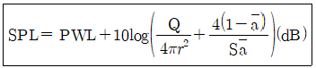
- PWL:음원의 파워레벨(dB)을 나타낸다.
- r:음원에서 수음점까지의 거리(m)이다.
- Q:지향지수(dB)를 나타낸다.
 :흡음력(m2)을 나타낸다.
:흡음력(m2)을 나타낸다.
(정답률: 알수없음)
47. 다음 중 금속스프링과 비교했을 때, 방진고무의 장점에 해당하는 것은?
- 고주파 진동의 차진에 좋다.
- 저주파 진동의 차진에 좋다.
- 최대변위가 허용된다.
- 쉽게 산화하여 열화된다.
(정답률: 알수없음)
48. 흡음성능을 측정하기 위하여 정재파 관내법을 사용한 경우에 1kHz의 순음인 사인파의 정재파비가 1.5였다면 이 흡음재의 흡음률은?
- 0.85
- 0.91
- 0.96
- 0.99
(정답률: 알수없음)
49. 다음 중 판의 진동에 의한 소음을 방지하기 위하여 진동판에 제진대책을 행한 후 흡음재료를 놓고, 다시 그 위에 차음재(구속층)를 놓는 방음대책을 무엇이라고 하는가?
- 댐핑(Damping)
- 패킹(Packing)
- 엔클로징(Enclosing)
- 래깅(Lagging)
(정답률: 알수없음)
50. 방진고무의 정적 스프링정수가 30kg/mm이다. 200kg의 하중이 걸릴 때 변형량은 얼마인가?
- 3/20mm
- 3/10mm
- 10/3mm
- 20/3mm
(정답률: 알수없음)
51. 진동수가 45Hz, 속도 진폭의 피크치가 0.035cm/s의 정현진동일 때 진동 가속도의 최대치는 몇 cm/s인가?
- 9.9×10-1cm/s2
- 9.9×100cm/s2
- 9.9×101cm/s2
- 9.9×102cm/s2
(정답률: 알수없음)
52. 소음제어를 위해 사용되는 자재류의 특성에 관한 설명으로 옳지 않은 것은?
- 차음재는 상대적으로 경량이며 음의 투과를 증가시킨다.
- 소음기(消音器)는 기체의 정상흐름 상태에서 음에너지를 전환시킨다.
- 흡음재는 내부 통로를 가진 다공성 자재로 잔향음의 에너지 저감에 이용된다.
- 제진재는 진동으로 패널이 떨려 발생하는 음에너지의 저감에 이용된다.
(정답률: 알수없음)
53. 진동계의 고유진동수를 구하는 방법으로 1자유도계인 경우 그 계의 정적변위 δst(cm)만 가지고 고유주파수 fn(Hz)를 구하는 식으로서 옳은 것은?
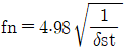
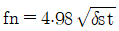
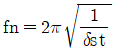
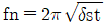
(정답률: 알수없음)
54. A공장 기계소음원(점음원)으로부터 20m 떨어진 곳에서의 음압레벨이 80dB였다면 30m 떨어진 곳에서의 음압레벨은 얼마가 되겠는가?
- 72.6 dB
- 73.5 dB
- 76.5 dB
- 78.2 dB
(정답률: 알수없음)
55. f/fn와 진동전달률과의 관계에 대한 설명으로 옳지 않은 것은? (단, f:외부에서 가해지는 강제진동수, fn:계의 고유진동수)
- f/fn＞√2인 경우 차진이 유효한 영역이다.
- f/fn=√2일 때 진동전달력은 외력과 같다.
- f/fn＜√2인 경우 항상 진동전달력은 외력보다 크다.
- f/fn=1인 경우 진동전달률은 최소이다.
(정답률: 알수없음)
56. 중량 W=25N C=0.⑤8Nㆍs/cm, 스프링 정수 k=0.357N/cm일 때, 이 계의 감쇠비는?
- 0.28
- 0.30
- 0.32
- 0.35
(정답률: 알수없음)
57. 흡음 덕트형 소음기에 관한 설명으로 옳지 않은 것은? (단, λ: 대상음의 파장(m), D:덕트의 내경(m))
- 통과 유속은 20m/sec이하로 하는 것이 좋다.
- 감음의 특성은 중ㆍ고음역에서 좋다.
- 각 흐름 통로의 길이는 그것의 가장 작은 횡단길이의 0.5배는 되어야 한다.
- 최대 감음 주파수는

(정답률: 알수없음)
58. x1=3sin5t와 x2=3sin6t의 두 조화진동을 합성하면 울림(beat)현상이 일어나게 된다. 이때 울림주기는?
- 1 sec
- 3.14 sec
- 4.71 sec
- 6.28 sec
(정답률: 알수없음)
59. 소음기의 성능표시를 나타내는 용어 중 소음기가 있는 그 상태에서 소음기의 입구 및 출구에서 측정된 음압레벨의 차로 정의되는 것은?
- 감음량
- 삽입 손실치
- 투과 손실치
- 감쇠치
(정답률: 알수없음)
60. 중공이중벽 설계 시 저음역의 공명주파수를 66Hz로 설정하고자 한다. 두 벽의 면밀도는 각각 15kg/m2, 20kg/m2일 때, 중간 공기층 두께를 약 얼마 정도로 해야 하는가?
- 9.6 cm
- 15.2 cm
- 18.2 cm
- 19.8 cm
(정답률: 알수없음)
4과목: 소음진동방지기술
61. 소음진동관리법규상 소음배출시설기준에 해당하지 않는 것은? (단, 마력기준시설 및 기계ㆍ기구 기준)
- 10마력 이상의 기계체
- 30마력 이상의 주조기계(다이캐스팅기를 포함한다.)
- 20마력 이상의 초지기
- 30마력 이상의 금속가공용 인발기(습식신선기 및 합사ㆍ연사기를 포함한다.)
(정답률: 알수없음)
62. 소음진동관리법규상 소음발생건설기계 소음도 검사기관의 지정기준 중 검사장의 면적기준으로 옳은 것은?
- 900m2이상(30m×30m 이상)
- 625m2이상(25m×25m 이상)
- 400m2이상(20m×20m 이상)
- 225m2이상(15m×15m 이상)
(정답률: 알수없음)
63. 다음은 소음진동관리법규상 항공기 소음의 한도기준에 관한 설명이다.( ) 안에 알맞은 것은?
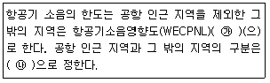
- ㉮ 90, ㉯ 국토교통부령
- ㉮ 75, ㉯ 국토교통부령
- ㉮ 90, ㉯ 환경부령
- ㉮ 75, ㉯ 환경부령
(정답률: 알수없음)
64. 소음진동관리법규상 측정망 설치계획에 포함되어야 하는 고시사항으로 가장 거리가 먼 것은?
- 측정망의 설치시기
- 측정항목 및 기준
- 측정망의 배치도
- 측정소를 설치할 토지나 건축물의 위치 및 면적
(정답률: 알수없음)
65. 소음진동관리법규상 시장ㆍ군수ㆍ구청장 등은 그 관할구역에서 환경기술인 과정 등의 각 교유과정별 대상자를 선발하여 그 명단을 해당 교육과정 개시 며칠 전까지 교육기관의 장에게 통보하여야 하는가?
- 7일전까지
- 15일전까지
- 30일전까지
- 60일전까지
(정답률: 알수없음)
66. 소음진동관리법규상 배출시설 및 방지시설 등과 관련된 개별 행정처분기준 중 소음ㆍ진동 배출허용기준을 초과한 경우 해당 차수별 행정처분기준으로 적합한 것은?
- 1차:경고-2차:등록취소
- 1차:개선명령-2차:개선명령-3차:개선명령-4차:조업정지
- 1차:개선명령-2차:허가취소
- 1차:개선명령-2차:조업정지-3차:폐쇄조치-4차:경고
(정답률: 알수없음)
67. 소음진동관리법규상 소음발생건설기계의 종류기준에 해당하지 않는 것은?
- 다짐기계
- 공기압축기(공기토출량이 분당 2.93세제곱미터 이상의 이동식인 것으로 한정한다.)
- 로더(정격출력 400kW 미만의 실외용으로 한정한다.)
- 발전기(정격출력 400kW 미만의 실외용으로 한정한다.)
(정답률: 알수없음)
68. 소음진동관리법규상 사업자가 배출시설 또는 방지시설의 설치 또는 변경을 끝내고, 배출시설 가동 시 환경부령으로 정하는 기간 이내에 소음진동 배출허용기준에 적합하도록 처리하여야 하는데, 여기서 “환경부령으로 정하는 기간”기준으로 옳은 것은?
- 가동개시일부터 7일
- 가동개시일부터 15일
- 가동개시일부터 30일
- 가동개시일부터 60일
(정답률: 알수없음)
69. 소음진동관리법상 생활소음ㆍ진동이 발생하는 공사로서 환경부령으로 정하는 특정 공사를 시행하고자 하는 자가 그 공사로 인해 발생하는 소음ㆍ진동을 줄이기 위한 저감대책을 수립ㆍ시행하지 아니한 경우 과태료 부과기준으로 옳은 것은?
- 300만원 이하의 과태료를 부과한다.
- 200만원 이하의 과태료를 부과한다.
- 100만원 이하의 과태료를 부과한다.
- 50만원 이하의 과태료를 부과한다.
(정답률: 알수없음)
70. 소음진동관리법상 확인검사대행자의 등록을 취소하거나 6개월 이내의 기간을 정하여 업무정지를 명할 수 있는경우에 해당하지 않는 것은?
- 파산선고를 받고 복권된 법인의 임원이 있는 경우
- 다른 사람에게 등록증을 빌려준 경우
- 1년에 2회 이상 업무정지처분을 받은 경우
- 등록 후 2년 이내에 업무를 시작하지 아니하거나 계속하여 2년 이상 업무실적이 없는 경우
(정답률: 알수없음)
71. 소음진동관리법규상 운행자동차의 ㉮ 배기소음허용기준(dB(A))과 ㉯ 경적소음허용기준(dB(C))으로 옳은 것은? (단, 2006년 1월1일 이후에 제작되는 중대형 승용자동차 기준)
- ㉮100 이하, ㉯ 1⑤ 이하
- ㉮100 이하, ㉯ 112 이하
- ㉮1⑤ 이하, ㉯ 110 이하
- ㉮1⑤ 이하, ㉯ 112 이하
(정답률: 알수없음)
72. 소음진동관리법규상 소음ㆍ진동검사를 의뢰할 수 있는 검사기관에 해당하지 않는 것은?
- 대구광역시 보건환경연구원
- 환경관리협회
- 지방환경청
- 유역환경청
(정답률: 알수없음)
73. 소음진동관리법규상 교통소음 관리기준 중 농림지역의 도로교통소음 한도기준(LeodB(A))으로 옳은 것은? (단, 주간(06 : 00~22 : 00) 기준)
- 58
- 60
- 63
- 73
(정답률: 알수없음)
74. 다음은 방음벽 성능 및 설치기준 중 방음벽의 음향성능 및 재질기준이다. ()안에 알맞은 것은?
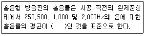
- 50 % 이상
- 60 % 이상
- 70 % 이상
- 85 % 이상
(정답률: 알수없음)
75. 소음진동관리법규상 생활소음과 진동의 규제에서 환경부령으로 정하는 지역에서는 소음ㆍ진동에 대한 규제가 제외되는데, 다음 중 이 지역에 해당되지 않는 것은?
- 산업입지 및 개발에 관한 법률에 따른 산업단지(단, 산업단지 중 국토의 계획 및 이용에 관한 법률에 따른 주거지역과 상업지역은 제외)
- 국토의 계획 및 이용에 관한 법률 시행령에 따른 일반 공업지역
- 자유무역지역의 지정 및 운영에 관한 법률에 따라 지정된 자유무역지역
- 생활소음ㆍ진동이 발생하는 공장ㆍ사업장 또는 공사장의 부지경계선으로부터 직선거리 300미터 이내에 주택(사람이 살지 아니하는 폐가는 제외), 운동ㆍ휴양시설 등이 없는 지역
(정답률: 알수없음)
76. 소음진동관리법규상 관리지역 중 산업개발진흥지구의 밤 시간대(22 : 00~06 : 00) 공장진동 배출허용기준(dB(V))으로 옳은 것은?
- 55 이하
- 60 이하
- 65 이하
- 70 이하
(정답률: 알수없음)
77. 소음진동관리법규상 소음배출시설기준에 해당하지 않는 것은? (단, 대수기준시설 및 기계ㆍ기구기준)
- 40대 이상의 직기(편기는 제외한다.)
- 2대 이상의 시멘트벽돌 및 블록의 제조기계
- 2대 이상의 자동포장기
- 방적기계(합연사공정만 있는 사업장의 경우에는 5대 이상으로 한다.)
(정답률: 알수없음)
78. 소음진동관리법규상 환경부령으로 정하는 특정 공사의 공사장 방음시설 설치기준이다. ()안에 가장 알맞은 것은? (단, 삽입손실 측정을 위한 측정지점(음원 위치, 수음자 위치)은 음원으로부터 5m 이상 떨어진 노면 위 1.2m 지점이며, 방음벽시설로부터 2m 이상 떨어져 있다.)
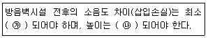
- ㉮ 5 dB 이상, ㉯ 3m 이상
- ㉮ 5 dB 이상, ㉯ 10m 이상
- ㉮ 7 dB 이상, ㉯ 3m 이상
- ㉮ 7 dB 이상, ㉯ 10m 이상
(정답률: 알수없음)
79. 소음진동관리법규상 자동차 종류 범위기준에 관한 설명으로 옳지 않은 것은? (단, 2006년 1월1일부터 제작되는 자동차 기준)
- 이륜자동차는 주로 1명 또는 2명 정도의 사람을 운송하기에 적합하게 제작된 것으로서 엔진배기량 50cc 이상 및 빈 차 중량 0.5톤 미만을 말한다.
- 이륜자동차에는 옆 차붙이 이륜자동차 및 이륜차에서 파생된 3륜 이상의 최고속도 50km/h를 초과하는 이륜자동차를 포함하며, 빈 차 중량이 0.5톤 이상인 이륜자동차는 경자동차로 분류한다.
- 화물자동차에는 밴(VAN)을 포함한다.
- 승합자동차에는 지프(Jeep)ㆍ왜건(Wagon), 루프(Loop)를 포함한다.
(정답률: 알수없음)
80. 소음진동관리법상 이 법에서 사용하는 용어의 정의로 옳지 않은 것은?
- “자동차”란 「자동차분류관리법」에 따른 자동차와 「건설기계관리법」에 따른 건설기계중 국토교통부령으로 정하는 것을 말한다.
- “교통기관”이란 기차ㆍ자동차ㆍ전차ㆍ도로 및 철도 등을 말한다. 다만, 항공기와 선박은 제외한다.
- “소음발생건설기계”란 건설공사에 사용하는 기계 중 소음이 발생하는 기계로서 환경부령으로 정하는 것을 말한다.
- “방진시설”이란 소음ㆍ진동배출시설이 아닌 물체로부터 발생하는 진동을 없애거나 줄이는 시설로서 환경부령으로 정하는 것을 말한다.
(정답률: 알수없음)